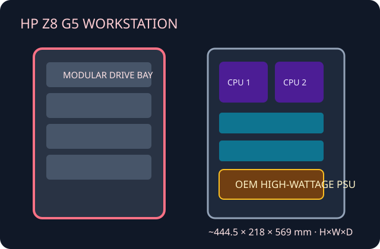

[ HP Z8 G5 // DUAL-PROCESSOR WORKSTATION ]
HP Z8 G5 Workstation Tower
High-capacity dual-socket tower with configuration-dependent graphics, thermal and storage kits. Not interchangeable with the Z8 G4.

Specifications & fit
| Model / revision | HP Z8 G5 Workstation; verify product number and QuickSpecs revision. Z8 G4 components are not assumed compatible. |
|---|---|
| Board form factor | HP proprietary dual-socket system-board layout; no standard E-ATX or SSI-EEB interchangeability is specified. |
| Dimensions | Approximately 444.5 × 218 × 569 mm (H × W × D); check exact product configuration, feet and installed accessories against HP documentation. |
| PSU | HP factory supply options include 1125 W, 1450 W and 1700 W, depending on configuration. GPU count/wattage is tied to the selected supply and cooling option. |
| GPU / cooler / radiator fit | HP documents high-end professional GPU configurations, including up to two cards in supported builds. Use matched GPU retainers, PSU cables and thermal kits. Processor heatsinks/fans are OEM; no universal retail radiator size is published. |
| Drive bays | QuickSpecs list multiple internal 3.5-inch positions and 5.25-inch/optical or front-access storage options by configuration; exact count depends on cage and installed modules. |
| Airflow | Engineered multi-zone cooling through CPU, memory and GPU areas; high-power builds require specified HP fans and air guides. Keep vents and acoustic/thermal baffles installed. |
| Serviceability / compatibility | HP service guide and product-number parts list govern PSU, processor cooling, cages and GPU accessories. Do not mix generation-specific boards, harnesses or shrouds; not a general-purpose tower shell. |
Manufacturer sources
- HP — Z8 G5 Workstation product pageManufacturer overview, supported platform and configuration families.
- HP — Z8 G5 Workstation QuickSpecsDocumented PSU, storage, dimensions and option configuration details.
- HP Support — Z8 G5 specifications and supportOfficial product documentation and configuration support.